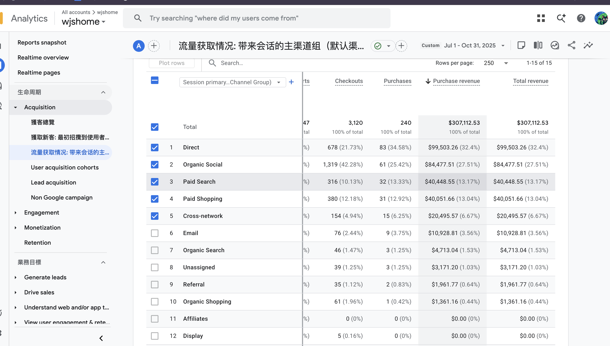

← 返回案例
E-commerce SEO
面向自然搜索收入和产品发现的电商 SEO 案例。
在 WJS Home 项目中，我作为该网站的专职 SEO 执行负责人，向一位直属主管汇报，并独立承担网站日常 SEO 落地工作，包括 Shopify 技术 SEO、内容优化、产品页与集合页增长、数据分析、开发协作、站外权威建设和实施 QA。
$265K+美元 · GA4 自然搜索收入 · 2025.11-2026.07
+52.51%近期自然搜索收入增长
16.7KGSC clicks
1.16MGSC impressions
策略与执行
- 明确博客、集合页、产品页、信任页和收入页面在网站中的角色和责任。
- 优化网站内容结构，让用户能从信息搜索自然进入产品发现和购买路径。
- 优化集合页和部分产品页，包括关键词命名、标题、描述、页面文案、图片和内链。
- 审计收录、抓取、sitemap、canonical、redirect、重复内容、schema、Core Web Vitals 和 Shopify SEO 问题。
- 评估技术检测结果，整理优先级，并与开发沟通落地。
- 通过外链文章、短文和 PR 类型内容增强网站 authority、品牌曝光和自然流量。
- 在自然搜索可见度大幅下降后，排查受影响内容模式、细化页面角色，并帮助 GSC 日均点击恢复至约 100 次。
2025 年 11 月 1 日至 2026 年 7 月 31 日期间，GA4 记录的 Organic Search 收入为 265,788.78 美元；另一可比周期的近期自然搜索收入增幅为 52.51%。2026 年 5 月 18 日至 7 月 31 日期间，GSC Generative AI performance report 记录了 50.7K 次展示，网站同时通过了 Core Web Vitals 评估。




1 / 6